- Week 1
- Week 2
- Week 3
- Week 4
- Week 5
- video 1 Introduction to game theory and Payoff matrix - Week 6
- Week 7 - Clustering
- Week 8 - Argumentation
- Week 9 - Consensus
- Week 10 - Ethics in AI
Week 1
An agent, normally receives inputs (images, audios, waves from object detectors, etc.) called percepts.
These percepts are elaborated, help generate new states which, in turn, help decide the next action
Environment Characteristics
Week 2
Observability
-
Full observability: Everything can be observed.
Chess, Go etc.
-
You may get more information going on, but, at least at the beginning, not everything belonging to the environment (and about other possible agents) is known.
Poker (you don't know enemies cards), a maze, real world, self-driving cars etc.
Partial observability causes
Partial observability may depend on different things:
- The agent may lack of some sensors, or they are not powerful enough (physic limitations like atoms);
- There may be noise interfering with the sensors;
- Computational complexity;
- World structure.
Uncertainty
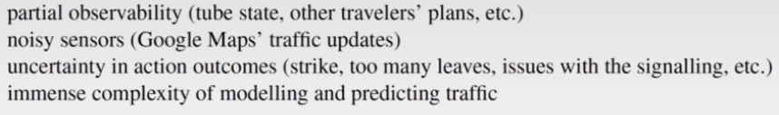Handling Uncertainty
Uncertainty should be addressed in order to reach better solutions in problems. It can be handled in 3 ways:
-
Using probability (given the available evidences); probabilistic assertions summarise the effects of:
- laziness: failing to enumerate exceptions, qualifications, etc.;
- ignorance: lack of relevant facts, initial conditions etc. (we tend to ignore these).
Nonetheless, probabilistic assumptions come with issues such as computational complexities, obtaining values, semantics etc.
-
Using utility theory, used to represent and infer preferences (assigning scores to events);
-
Using decision theory (utility theory + probabilistic theory).
Fuzzy Logic

Fuzzy logic might look like a probabilistic process, but it's completely deterministic, do not confuse it.
Probabilistic basis
In probability, the space of possible outcomes is denoted by . Any subset of is called event, and is an atomic event (there can't be two of these events at the same time)).
is the probability of the hypothesis given the event .
Probability space (or model) is a sample space with an assignment for every (which sum has to be 1)
Proposition
Propositions are the way we define the world, or mathematical statements which are true or false. You can think of them as events where the proposition is true.
You can use Boolean logic operators (AND, OR ...) as well as mathematical (<, >, != ...)
P(a OR b) = P(a) + P(b) - P(a AND b)
Prior or unconditional probabilities happens when two probabilities are not related to to each other. Like having a cavity.
Posterior probabilities happens when we have additional evidences affecting the probability fo something.
PRIOR = 0.1 . . . . .
POSTERIOR | = 0.2
A nice to remember formula is:
P(a | b) = P(a AND b) / P(b)
(assuming p(b) > 0)
Probability distribution can be represented as a vector which has to be exhaustive (include all the possible outcomes), mutual exclusive (no option has to be repeated), and of course the sum has to be 1.
eg. <0.72, 0.1, 0.08, 0.1>
A subtle notation to look at is P() which generates a number and P() (bold) which generates a vector.
In the case the formula is P(H | e), the resulting vector is <P(H | e), (¬H | e)>
When looking at the given clause (in P(a | b) b is the given clause), some components can be removed. For instance, if a: Cavity = TRUE and b: Toothache & Cavity, of course P(a | b) = 1, and the Toothache part can be removed as its contribution is less than the other or, like in other cases, meaningless (suppose rather than toothache I had Curtains Blue = True).
<ht
P(a AND b) = P(a | b)
*P(b) = p(b | a)*P(a)
Comma , is often used in place of AND, so P(a,b) = P(a AND b)
Chain Rule

P(a,b) = P(a,b,c) + P(a,b,¬c)
P(a | b) = alpha*P(a,b)
where alpha = 1 / P(b)
Independence
When you create a matrix of the possibilities say of P(Cavity, Weather), the two of them are not related, so P(Cavity, Weather) = P(Cavity)*P(Weather). Suppose both of them have 100 possible outcomes, the matrix resulting would be 100 * 100, but being independent, you can store them as 100 + 100. Furthermore, as the sum of the events always adds up to 1, you can store them as 99 + 99.
Conditional Independence
Absolute independence is amazing, but rare. It formulates like
A is conditionally independent of B given C
P(a | b, c) = P(a | b)
ADVICE: in case you have P(a | b) which is very high, don't automatically expect P(b | a) to be high as well
Week 3
Naive Bayes & Bayesian networks
Naive Bayes means that you naively assume there's no correlation between 2 events.

Bayesian networks are a way to represent these dependencies
CPT (conditional probability table) are boolean tables showing probabilities
Note: that it is not the sum of the column that should add up to 1, rather,


I AM NOT SURE WHICH IS THE CORRECT ONE *****
- A further way to reduce the storage is that to decompose a random variable, and then remove one of them
e.g. North America <=> Mexico V USA V Canada (one of them can go)
- If there is a boolean random variable which is implied by other variables, this one can be omitted
e.g. North America <=> Mexico V USA V Canada, North America is already specified by the others, hence, we can omit it
Markov Blanket
A Markov Blanket of a node X is the set of:
- parents of X
- children of X
- parents of X's children
Inference
Given some evidence and reasoning, what conclusions can we draw
Inference by ENUMERATION
Among all the inferences, this is the only one that is deterministic as opposed to the others which are probabilistic.
When sampling, you can just take whatever sample you get, you can reject your samples if they are not efficient, or, as opposed to the latter, you can weight your samples, so you don't have to throw them away.
Samplings
Given a list of random values between 0 and 1:
-
Prior Sampling:
for each variable use the values in order and get the result;
-
Rejection Sampling:
Same as prior, but in the clause reject the sample if is not obtained as defined in the clause.
-
Importance sampling:
For the clause compute value for all the variables in the network but the events . Given the obtained configuration, consider the the probability of obtaining as defined in the clause and multiply these results.For example, you start with the clause where and are both true, and both depend on .
What you are interested in is
Importance Sampling
Like for sampling, you may want to calculate a probability P(h | s, t).
The difference with normal sampling is that, since you want to calculate h given s and t, you assume that s and t are both true.
However, this will make the final result (probability) falsie. To fix this, you weight the samples that are taken for granted in the clause.
Suppose you have this network:
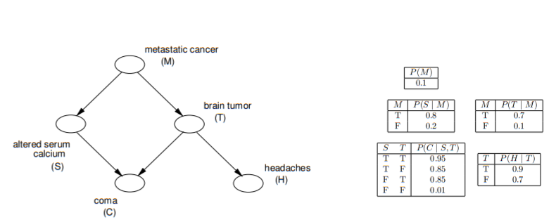
and you want to calculate , then, using random sampling you calculate , but P(t | M) you assume it's true as well as P(s | M) as they both are part of the given clause.
Look out, M is neither m nor ¬m yet as it has to be calculated using sampling.
Say, using sampling, that M = m (so m = True), in that case s is still True (as it's part of the given clause), but what is the of it happening, aka. ?
The value (in this case weight) is given in the CPT and it's 0.20.
Then we do the same for t, and the weight for , which is 0.70.
Now, whatever is the probability we obtain using sampling, we weight it taking into account the given clause events weights.
[always keeping in mind that we don't sample s and t]


Week 4
Expected Value
Suppose you play a game with different possible outcomes, some good and some bad ones.
The so called Expected value(E[X]) is the sum of the probabilities of each possible outcome.
e.g. you play a dice game and:
- win 10$ if the result is 6,
- loose 2$ if the result is odd,
- loose 1$ if anything else.
winning 10$loosing 2$loosing 1$
E[X] = 1/6 * 10 + 3/6 * -2 + 2/6 * -1 = 1/3
as E[X] is positive, you should take the risk.
Linearity of expectation formula
In the example, if you play 10 times, expected value doesn't change for each game, and the total is multiplied by 10. There's a rule called Linearity of expectation which is describes as:
E[*X + Y] = E[*X] + E[Y] = E[X] + E[Y]
a* Function
We want our agent to be rational, so, given:
- a set of states S;
- an action a, and sa is the new state after applying a;
- an utility function ;
a* = argmax (sa)
The problem is that in any realistic situation, the resulting state is probabilistic. Instead we have to calculate the expected utility of each action and make the choice on the basis of that.
In other words, for each action a with a set of outcomes sa, the agent should calculate the E[a] for every a and pick the best one.
But if the action we are dealing with is stochastic, and the outcome in unsure?
Say for instance that both actions a1 and a2 have multiple outcomes like this:

video 2
Now, there are 2 approaches to this problem:
- you are optimistic, and you hope the result will be the best (maximax), so the output of a* would be the max value among the best values for each sa;
in this case, argmax(5, 7);
- or, if the there is a risk in getting the lowest score action (to say, the agent risks its life, or something very bad is related to it), you pick the best score among the worst ones for each action (maximin)
in this case, argmax(4, 3);
NOTE: in case a probability is assigned to each output, you do not consider it for the maximin (and maximax) function.
Markov Decision Process (MDP)
It is a Markov Chain with the addition of probability and reward; also, the probability distributions do not change.
This greedy approach takes into account only the next state, but in real life, agents have to take a series of decisions.
We can write a transition model to describe these stochastic actions and the model looks like:
where is the action that takes the agent from to .
The probability, in this case, depends only on the previous and the next state, there's no "memory", i.e. the agent doesn't care about the previous states. This transition is known as first order Markovian.
This leads to a process called Markov Decision Process (or MDP):

Policy
Denoted as , a policy is a solution, that is, a choice of action for every state.
In any state , identifies what action to take.
e.g. : = left, = left, = right, etc....
Naturally we’d prefer not just any policy but the optimum policy which we found comparing policies by the reward they generate.
The optimum policy * (Pi star) is the policy with the highest expected value.
At every stage the agent should perform *
video 3
Utility Run
Previously we have defined the utility function for a state, although this can be useful sometimes, we tend to prefer the utility for a sequence of actions also called a run.
We denote this function as
r([s0, s1, s2, ...., sn])
Different type of utilty functions can be distinguished:
- based on the horizon: finite or infinite (if the number of states is infinite or there is a limit defined by terminals states);
- based on the reward: stationary (fixed) or non-stationary(it can change);
- based on how later the agent gets the reward: additive or discounted
Additive: R(s0, s1, ..., sn) = R(s0) + R(s1) + ... + R(sn)
Discounted: R(s0, s1, ..., sn) = R(s0) + R(s0) + ... + n R(sn) [0 <= < 1]
What this means for discounted utilities is that, since actions far away from our current state may include random factors and noise, we diminish their values.
In a "world" where utilities functions are infinite and additive, the are no bounds on the min/max score of the function, and the output may be useless. To solve this problem there are 3 solutions:
Proper policies
Always end up in a terminal state, so a finite expected utilities. A PAC-MAN whose only aim is to stay alive does not operate a proper policies as the steps can be infinite.
Average reward
Sum the rewards of each state in the function, and then divide by , aka, calculate the average score of the states.
Discounted rewards
Scale the the reward based on the number of steps required to reach a state. Even if you have infinite steps, after a threshold, the reward will be close to 0.

video 4
Bellman Equation
.
What this formula means is that, given a state, to calculate its utility, you have to sum the reward you obtain from that state + a factor times the best E[X] obtained from the following states reachable from the current state.
In the pacman example, R(s) is the cost of the action (0.04), whereas the remaining component is taken from the utility score of each possible next state.
In the problem where the agent goes 80% of the time in the direction you specify, and 10% it goes to either traversal direction, the Bellman formula would result in:

As you can figure out, Bellman equation is not computable in linear space, as from a state you can reach n new states, which in turn can reach n new states ()
To reduce the space complexity, it is possible to use parallelism. In this case by creating an independent thread for each possible action.
This process is called value iteration and is described by this pseudo-code:

[LOOK AT THE .XLS FILE TO FIGURE OUT THE ALGORITHM]
Another thing to mention is the fact that a reward is not always positive. In the case of PACMAN, for example, making a move might have a good utility score, but if no food is eaten, the moves has a cost of .04, which is in fact the reward.
This is the updated formula of Bellman

video 5
Policy Iteration
A similar approach to the value iteration is the policy iteration (it is on average faster than value iteration, but it is not guaranteed to be). It is composed by 2 steps:
Policy Evaluation
Update the utility of all the states given teh current policy.
Policy Improvement
Update the policy of each state given the current utility function.
Just look at one step ahead and take the best policy according to the scores given by policy evaluation.
The policy iteration process is way faster the value iteration one , especially when using an approximation.
However, it is not guaranteed to converge. For this reason, it may be a good idea to create a first schema using PolicyIteration, and then converge using Value Iteration
The approximation for the policy iteration is faster as is can be performed in parallel, but the issue is that it does not wait wait for the policy evaluation/improvement to be performed on each state, hence, some states may look at the past states (correct) whereas other may see the current states already (wrong).
Week 5
video 1 Introduction to game theory and Payoff matrix
Payoff matrix
Suppose you have 2 agents: and . Create a matrix:
- For each move of create a row in the matrix.
- For each move of create a column in the matrix.
- In each cell, write the reward for each agent, given they operate the move in that combination (row, column)
This matrix should look like this:
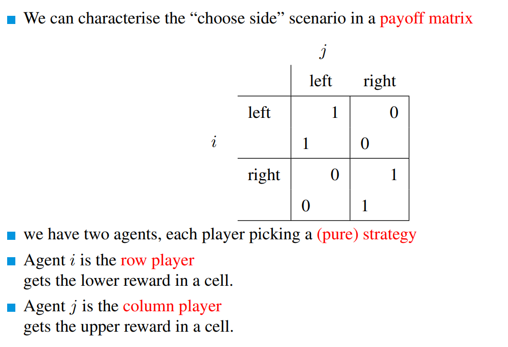
However, it can be decomposed and a individual matrix can be created for each agent, and contains only the cost of such agent.
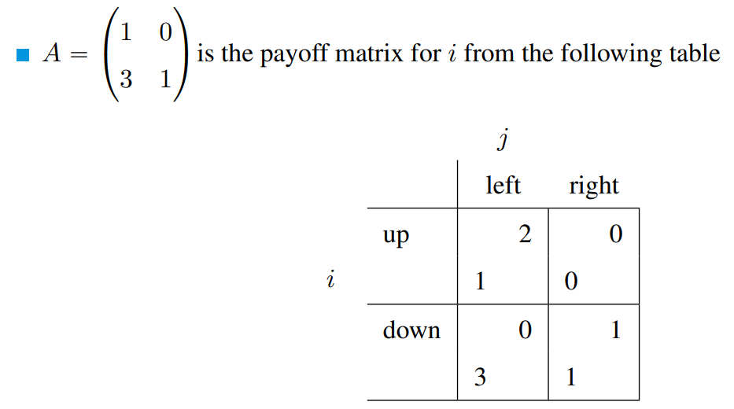
video 2 Dominant strategy


To reduce the size of the matrix, it is possible to remove columns and row when they are dominated by at least another column or row respectively.
Say you have: 
R is always a dominated strategy, so you can get rid of it.
As we have removed a column, we should now look at the rows (again if have already done it).
Nothing can be removed, so this is it.
video 3 Nesh Equilibrium
Nesh Equilibrium (NE)
In Game Theory, it's called Nash Equilibrium a state in which, for each agent, if ONLY that agent makes a move, there's no improvement in the score.
In general, we will say that two strategies s1 and s2 are in Nash equilibrium (NE) if:
- under the assumption that agent plays , agent can do no better than play ; and
- under the assumption that agent plays , agent can do no better than play .
Not every interaction scenario has a pure strategy NE.
Some interaction scenarios have more than one NE.
The optimal pair of strategies might be as well in the NE.
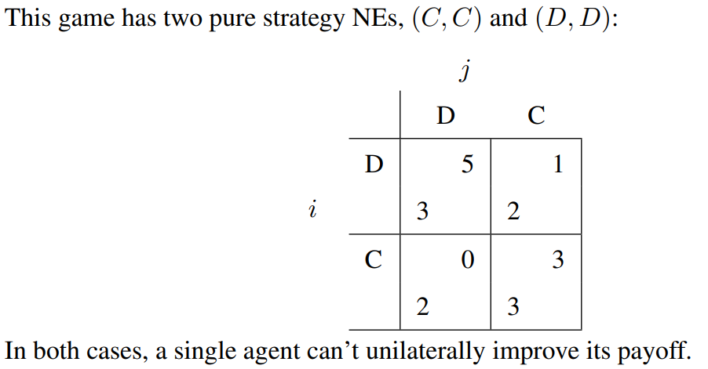
- for the column player you can only move LEFT or RIGTH vice versa
- for the row player you can only move UP and DOWN
Remember, in a NE, given one agent opts for a pure strategy (aka, its strategy is fixed), you have to look at the payoff of the other agent only. In the above example, say move is C, then can either play D or C, and the payoffs to look at are respectively 0 and 3 ONLY.
video 4 Pareto Optimality
Pareto Optimality (or Efficiency)
A Pareto Efficient state is state in which no agent wants to move away from.
In other terms, you only move away from it if either
- the payoff improves for both agents;
- one agents ends up having the same payoff, but the other one improves it (the agent not improving has to allow it tho)
Differently from the Nash Equilibrium, the pareto efficiency allows both agents to make a move. In the previous table, (C, C) is not pareto optimal because if both agents move to (D, D), payoff doesn't get worse whereas 's one does.
Social Welfare
Conversely to the Pareto Efficiency, Social Welfare aims to maximise the total payoff of both agent, regardless with the score of each individual agent. So a (9, 0) is preferable to a (4, 4)
video 4 Pareto Optimality
Coordination Game
In a coordination game, given 2 agents and ,
for all X .
In other words, both agents have the same payoff for each combination of moves, but when the two agents both take the same action (A, A) or (B, B), payoff 0, whereas different moves like (A, B) or (B, A) have a zero payoff.
The opposite of this game is the misanthropes (un)coordination game wherein the reward is bigger than zero when the two agent take opposite moves.
Constant Sum Games
In a constant sum game, the sum of the payoff is the same for each move
for all X .
An example is the tossing a coin game, where you either win (+1) or lose (0), and the sum is always constant (1)
Zero Game
This is a special type of constant game where the sum is always 0
for all X .
The toss a coin game where the payoff is would result in a sum payoff of 0 all the times. Another example is rock, paper, scissor
Mixed Strategy
 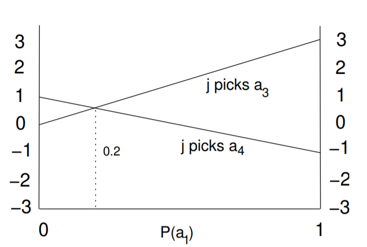
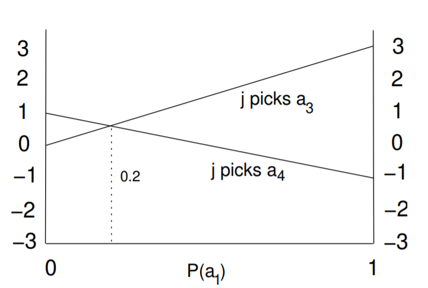
Consider the payoff matrix on the left.
On the right we draw the graph given j plays a fixed strategy.
(note that the right outcome is 1, so when the j does play that action, and the left one is 0, that is when j does NOT play it).
The intersection means that, at that point, i gets the same output regardless with the choice it makes.
Week 6
PCA (video 1)
PCA (or Principal Component Analysis) is dimensionality reduction technique. SVD (or Simple Value Decomposition) share the same idea and you can often interchange them, however, SVD is preferred.
What you do in PCA is you want to reduce the number of dimensions so that you can use clustering to make easier to analyse and plot the data. The steps are:
- take 2 or 3 dimensions;
- (plot them if you want a graphical representation);
- find a regression function with the highest variance (the more spread are the reflections of the X on the line, the better); and
- use that regression as a new, single dimension.
Say you start with 5 dimensions, you can group them into 2 PCAs (PCA_1 and PCA_2) with 3 and 2 features and make a new graph.
The PCA represented on X axis is more important than the one on the Y axis, as such, when a cluster A is equally distant from 2 clusters B and C, the further away in the X axis is the more different.
(video 2)
When you have 3 dimensions, ideally you want to reduce them to 1 eventually to be able to plot them in the PCA graph, however, you can go from a 3D to a 2D plot and that is still fine, but you have to remember that your PCA graph will end up with 1 more dimension.
Generally, if you have a 3D plan of x1, x2, x3 and you create a 2D plan out of it, the hyperplane you have just created has z1 and z2 as axis names
Matrix multiplication (video 3)
In a matrix like the following one a common mistake may be to consider the cols as the X-axis and the rows as the Y-axis, but to refer to a cell it is actually the opposite.
As you can see by looking at the names, the position of uses the row as the first index (row 3) and the column as the second index (col 2)

Even the dimensions are indicated as that is
How do you multiply 2 matrices
When you multiply matrices the order matters, so the commutative property does not hold.
Say you have 2 matrices and , then .
In a 2 matrices multiplication, say , the resulting matrix will have:
- the number of columns of and
- the number of rows of ;
e.g.
Look at this matrix multiplication
The first matrix is a 5 x 1 (5 rows and 1 col) whereas the second is 1 x 4 (1 row and 4 cols).
For what said before, the resulting matrix will have 5 rows and 4 cols, so it will be a 5 x 4 matrix.

Having said that, the way you calculate the value for each cell should be pretty intuitive:

Transposition: it means you flip the matrix along the main axis, aka you invert the indices, so becomes .
Matrix transformation
Let's say we have a matrix which represents a 2D image.
Using Matrix multiplication, you can change the aspect of this image in many ways:
Image Stretching

Image Rotation

Rotations ClockWise:
90 deg:
180 deg: or
-90 deg:
Image Skewing (Shear mapping)
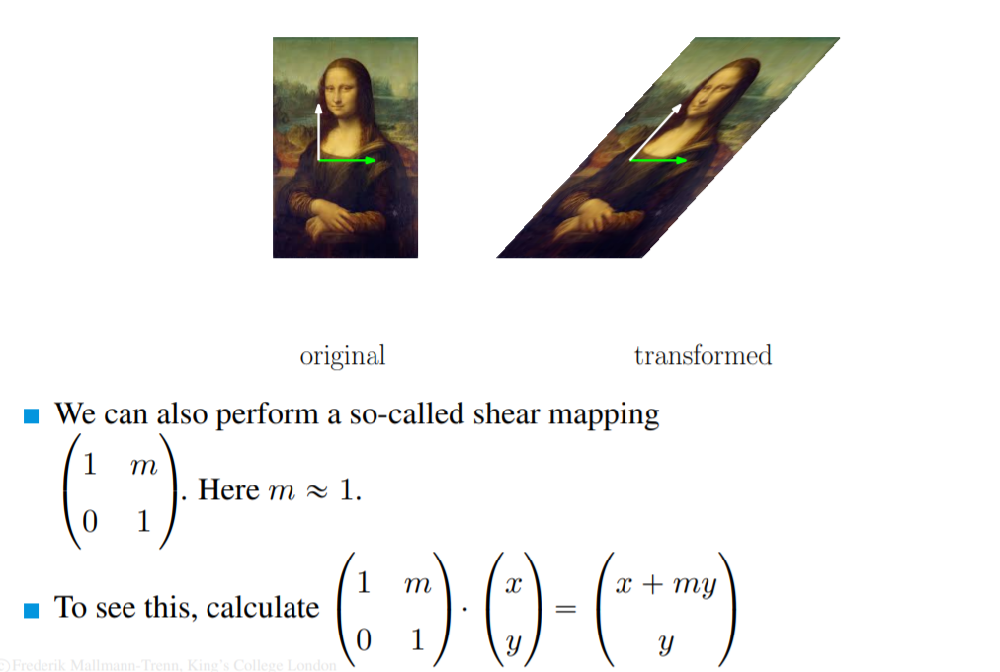
Eigenvector and Eigenvalue
If you look closely at the third image transformation you will notice that the X vector (the green arrow) did not change at all.
When a vector doesn't change its direction after a multiplication with a matrix, then it's an eigenvector.
Contrary, the white vector did the change its direction, so it is not an eigenvector.
In the first transformation, both the vectors are eigenvectors as they keep their direction, however, their length does change and that changing factor is called eigenvalue.
Eigenvector formula
A vector v is an eigenvector of the matrix M if
.
is the corresponding eigenvalue.
So multiplying M by v would result in v times an eigenvalue.
e.g. 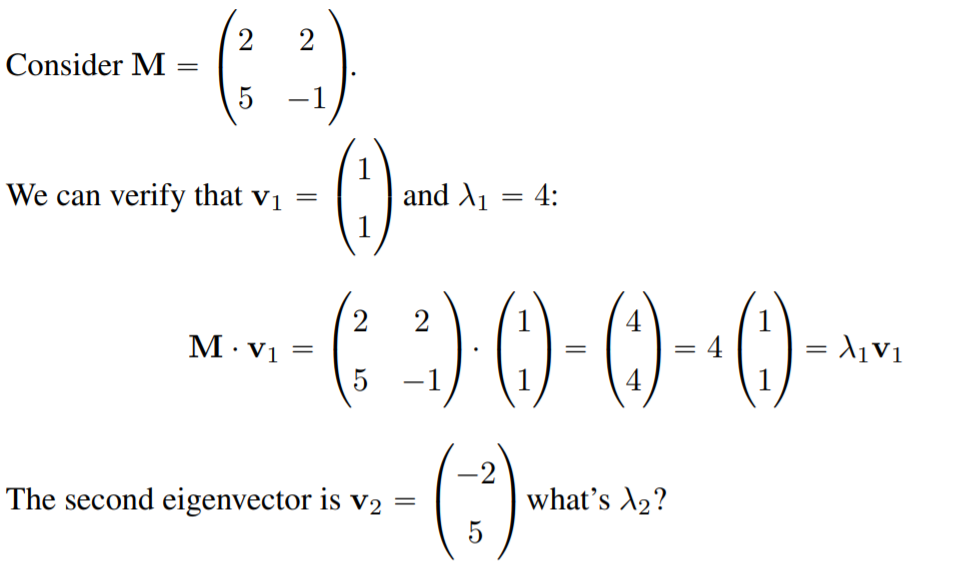
Calculating PCA using SVD
-
Start with the matrix you are interested in reducing the dimensionality of;
dimensions are
-
For each feature (so actually the columns) calculate the mean (mean row vector);
-
Using matrix multiplication, multiple by a matrix full of ones to obtain a matrix of the same dimensions as . We will call this matrix (mean row matrix).
dimensions are (1 row for each entry and 1 col for each feature, or col, in ). The result should be something like:
-
Given you have the mean of each row, you can shift an hypothetical graph so that its mean is the origin of the plan. The way you do it is by subtracting the mean to each elements .
Note: we shift the values, but the distance from each point remains the same.
dimensions are
-
Given we want to calculate the covariance matrix we just multiply the values of by themselves as ;
dimensions are
-
(Using a software) Compute matrix the largest eigenvectors of .
Each eigenvector has dimension .
check the steps in the tutorial.
Week 7 - Clustering
!!!! Videos 1 and 3 are useless !!!!
Video 2
Suppose you are using K-means with = 2 to find the centroids and at the end of the iterations you find the 2 clusters.
Those 2 clusters can either be optimal or awful, look at this example:

k-means ++
This happened because we randomly selected the 2 centroids . To prevent this we use a technique called k-means++ that goes as follow:
-
Set the first centre to be one of the input points chosen uniformly at random, i.e.,
-
For datapoints to :
2.1. For each point compute the distance to the nearest centre, i.e., calculatemin
That means, the minimum distance for each datapoint to a centroid2.2. Open a new centre at a point using the weighted probability distribution (so not automatically the most distant, but the most distant is the most likely to be choosen) that is proportional to (you square the distances so that further points are more relevant). That is:

-
Continue with k-Means
ex. there are 3 data points {a, b, c} with distances:
- = 1, so = 1
- = 10, so = 100
- = 15, so = 125
As a result, the probability of choosing b as the next centroid is
100 / (1 + 100 + 125)
k-Median
k-Median is the same thing as k-means, but k-Median uses L1 (manhattan distance) whereas k-means uses L2 (euclidean distance)
Hierarchical clustering
(video 4)
Clustering can also happen hierarchically, meaning that you either start having as many clusters as inputs and eventually reach 1 big cluster (Bottom up approach or agglomerative clustering), or, vice versa, by having 1 big cluster which you decompose into smaller one (top down approach or divisive clustering)
 In this example, you merge a-b first, as all the other clusters have a 0-edge, then, as all the remaining clusters have at least one 0-edge, you merge them alphabetically.
In this example, you merge a-b first, as all the other clusters have a 0-edge, then, as all the remaining clusters have at least one 0-edge, you merge them alphabetically.
Agglomerative Clustering
Clustering can start by considering each input as a cluster and then you combine these clusters until you have only clusters (if =1 you are probably aiming at creating a dendogram). This type

How do you decide how to combine clusters in agglomerative clustering?
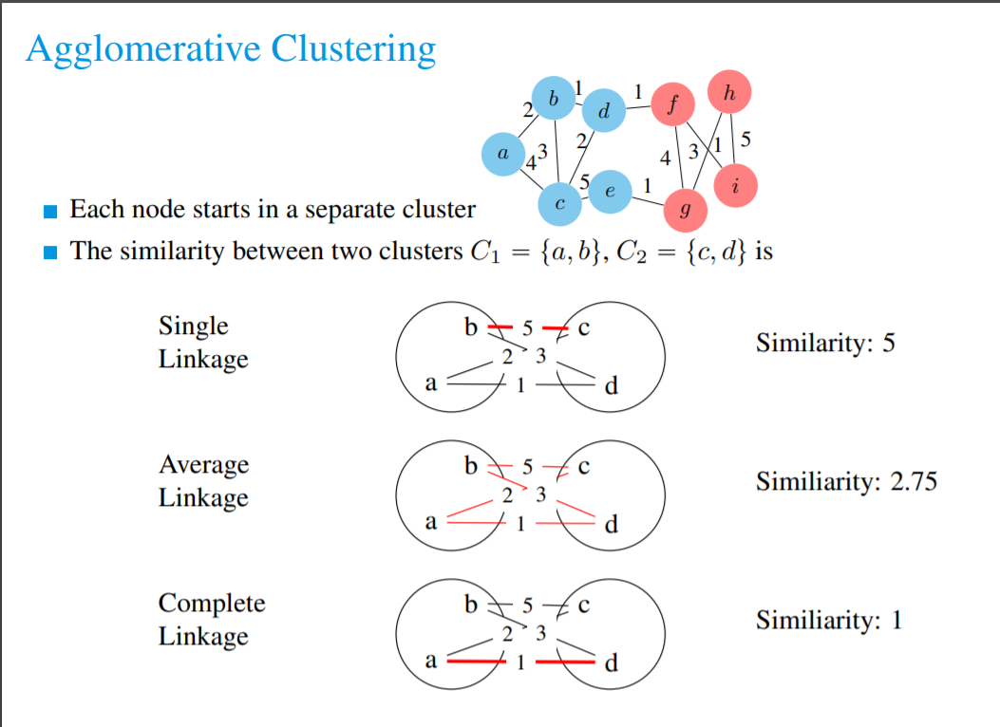
In this graphs, the edges are weighted and are called similarities, meaning that the higher the number on the edge, the more similar are two nodes. (the number can also indicate dissimilarities, but it is not our case)
Example using Single Linkage
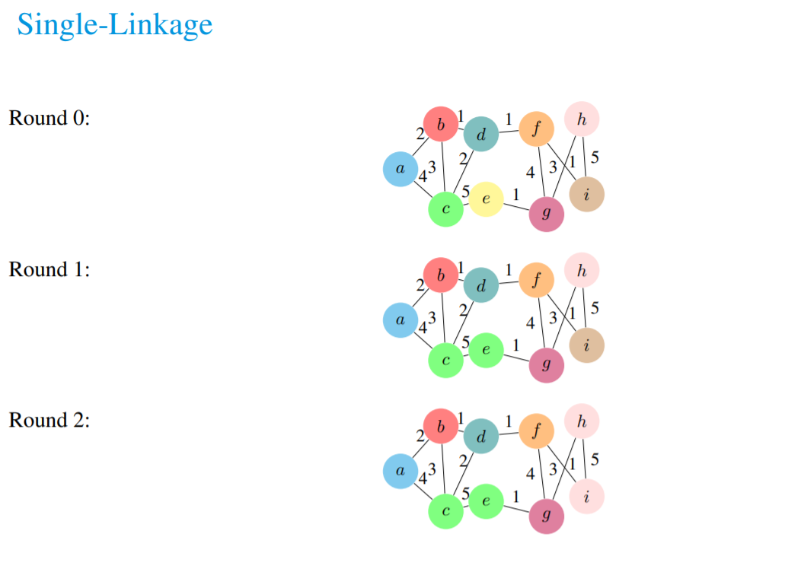

Divisive clustering
Divisive clustering, instead, starts with one big cluster which can be divided in 2 ways (we will see the sparsest cut)
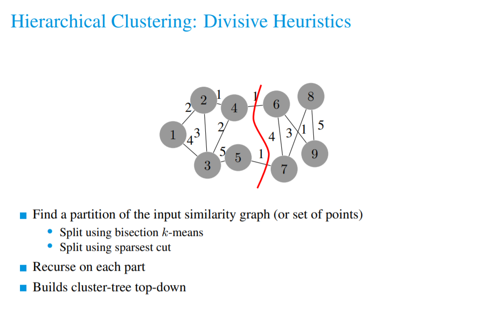
In the previous example, the formula where:
- 2 is the sum of the edges you cut ( 1 + 1 ) and
- 4 is the minimum size of the clusters you create this way ( 5 the left one & 4 the right one )
Dasgupta Cost Function
There used to exist valid Cost (or objective) functions for both k-Mean and k-Median, but not for hierarchical clustering until Dasgupta came up with one and now clusters obtained with hierarchical procedures can be compared.
Week 8 - Argumentation
Argumentation theory is concerned with acceptability conditions for arguments in relation to other arguments.
We assume that these arguments are in contrast with each other, some may support a particular claim whereas others may confute it.
If I take all of these arguments my reasoning would be based on inconsistency, so I should take a subset of them only, but which ones?
The point of argumentation is to define this question.
Arguments can attack one another, when this happens we say that an argument rebuts(confuta).
You generally represents arguments in a directed Graph:

As you see, nothing attacks A3;
A1 counter attacks to A2, as does A2 to A1, but A2 does not counter attack A3.
Abstract argumentation
Abstract argumentation disregards the internal structure of arguments (what an argument says) and focusses instead on acceptability conditions that allow certain sets of arguments to co-exist in a rational manner (it considers the graph only).
An abstract argumentation framework is a tuple ⟨𝑆, 𝑅⟩ where 𝑆 is a set of arguments (S is a node) and is an attack relation.
For arguments , means that argument 𝑎 attacks argument 𝑏.
The abstract argumentation framework from the previous example would look like this
𝑆= {𝑎1, 𝑎2, 𝑎3}
and
𝑅= {(𝑎1, 𝑎2), (𝑎2, 𝑎1), (𝑎3, 𝑎2)}
Argumentation semantics
A semantics for something is a “meaning” for it.
A non-monotonic conclusion is a conclusion that may change over time. For example, I believe it is going to rain, but then I see the forecast and it says it will not rain, so I change my mind.
The semantics can be defined through different approaches:
- Via extensions (subsets of 𝑆 with special properties) [this is the only one we will look at];
- Via labels (labelling functions on 𝑆 with special properties);
- Via equations (solutions to a system of equations describing the interactions in the argumentation framework ⟨𝑆, 𝑅⟩).
An extension is a set of arguments that are jointly “acceptable”.
In the previous example, as both a1 and a3 attack a2 (and do not attack each other) the set {a1, a3} is jointly acceptable.
Conflict-freedom
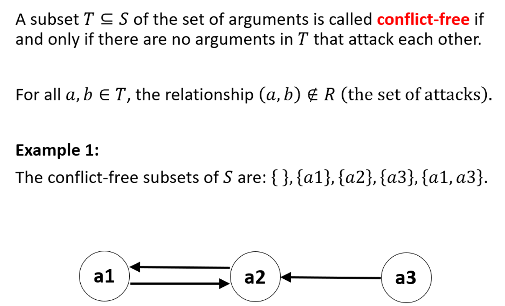Note: the empty set is included as well.
Argument Defence
 Also {a1} defends a1.
Also {a1} defends a1.
Note: any argument which has not attackers is defended by the empty set as for a3.
Admissibility

Complete Extention
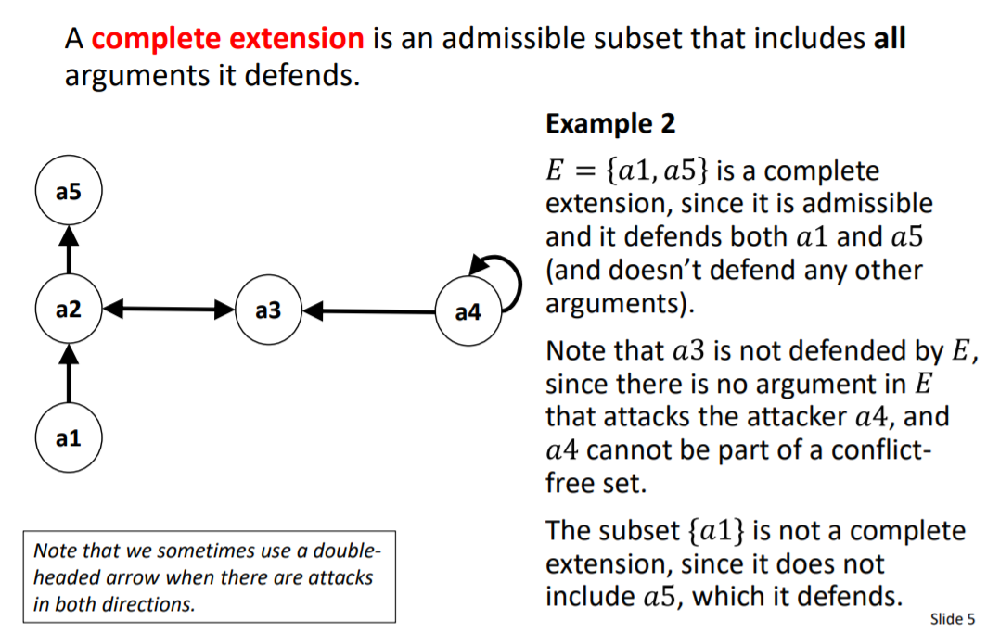The empty set is complete only if there aren't unattacked arguments
ANSWER: a3 does not defend a5 because it does not defend it from itself (a5 attacking itself). Not being a complete defense it does not count and {a1, a3} is valid.
Maximal and Minimal subsets
Given a subset , a maximal subset of in is a set which length is the highest as possible, vice versa, the minimal subset is the set with the smallest length.
e.g.

Ground and Preferred semantics
The grounded semantics aims to be cautious (minimise) in the acceptance of
arguments.
You can think of it as: “Accept only what is not controversial”.

The grounded extension always exists and it is unique.
The grounded extension could be empty.
The preferred semantics tries to maximise the acceptance of
arguments.
You can think of it as: “Accept as much as you can defend”.
A preferred extension is a complete extension that is maximal
with respect to set inclusion (ie, a maximal subset of the set of all
complete extensions).
Stable Extension
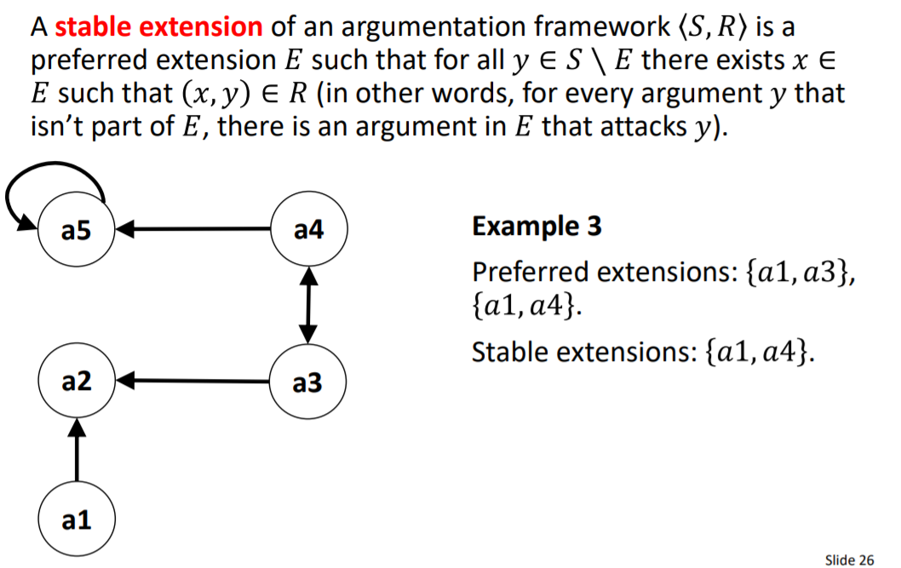all the elements not in the set are attacked by the elements in the set. (it has to be a preferred extension)
Basically, a set such that all the arguments not in are attacked by .
Stable extensions do not always exist. Imagine a 3 nodes cyclic graph (rock-paper-scissor)
Credulous and Skeptical Acceptance
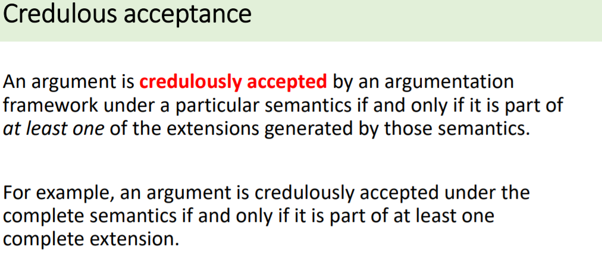 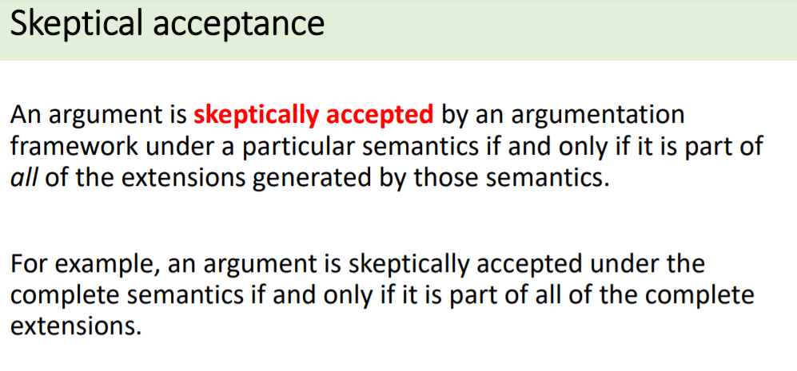Note it says argument, hence, the empty set {} is not included.
Week 9 - Consensus
Imagine a set of agents:
- We assume each agent can take a finite number of states (often called “colours”).
- Agents can see or communicate with other agents within their "neighbourhood".
- Interactions proceed in a series of rounds (or editions)
- All agents are using the same algorithm.
- We assume the agents share a common goal to achieve an overall configuration of states
Given the nodes have either state blue or red, and we want to achieve a common state, which one is the most likely to be?
What counts for an opinion’s advantage is the sum of degrees of nodes with a given colour.
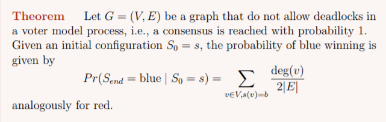
Week 10 - Ethics in AI
Part 1
With AI, there are particular aspects we need to consider
- Algorithms may be learnt, so that even the software developers do not know what they do or how;
- Many machine learning methods are “black boxes”;
- Data may be biased;
- There may be significant legal consequences to our design decisions.
The trolley problem
Is a type of problem wherein you have to make a choice, and both the alternatives bring bad outcomes.
Norms
Consider a self driving car, there are rules that the car should respect, like to use the right lane. However, there are cases that would lead us to drive in the opposite lane in order to prevent something, such as investing a pedestrian.
Hence, we cannot enforce these rules in such a way that forbids the car to do what is wrong, rather, we recommend the system not to do it. These are called norms.
Regulatory focus
Fairness (and elimination of bias)
- Systems should not be biased against particular groups or
- People with protected characteristics (age, gender, religion, ethnicity, etc)
Transparency
- Stakeholders should be able to see what input data is used, what processes or algorithms are used, what output data results, and what the intended and realized purposes are
Explainability
- Automated decision-making systems should be able to explain their decisions in a way that humans can understand
Rectification
- Automated decisions should be able to be reversed
Human involvement
- Are decisions mediated by humans in the loop
Governance of AI systems
- Singapore Government Personal Data Protection Commission (PDPC) Model AI Governance Framework (Second Edition), released January 2020.
Responsabilities
-
AI has no separate legal personality and cannot be an inventor for patents
-
England: an automated system is not an agent, as “only a person with a mind can be an agent at law”
-
USA: “a robot cannot be sued”
-
Germany: machines and software cannot declare intent for purposes of contracting
Judging AI
- Deterministic systems: Systems that may be automated but are not
autonomous; - Autonomous systems: Would a court look to the opaque subroutines
of the algorithm during subsequent system operation to determine
knowledge? - Probabilistic computing: Computing that is neither deterministic nor
autonomous, but based on a probability that something is the correct
answer. Quantum computing is an example. How would a court deal
with probability outcomes?
AI Car Accident
The court will not accept a statement that the car made the decision in
the spur of the moment
- Because the s/w developers had time to decide what to do in this situation
The court will examine several layers down to find who or what was
responsible, eg:
- How did the car-control program decide what to do?
- How did the s/w developers decide how to program the control software?
- What ethical principles did the s/w developers adhere to (explicit or
implicit)? - What ethical training had the s/w developers been given?
- What ethical policies had the car manufacturer or the company employing
the developers had in place? - Etc.
Part 2
Bias can occur at any steps of a machine learning algorithm:
- Historical data (input data set), train, validation, or test data, plu new data to test the final model;
- Generated by the learning process;
- Monitoring & Feedback.
ML and DL are usually data-driven
Patterns are found with no explanation as to why or what these
mean
In model-driven approaches, the AI system has a model of the
application domain
For example, a causal model connecting causes with effects (causal graph).
Since Windows95, every version of Windows OS has a Bayesian
Belief Network linking causes with effects in printer operations,
to help diagnose the causes of printer problems.
Identifying bias is difficult in data-driven systems.
We don’t know what factors were used to make the decisions or
recommendations.
- If the program undergoes evolution or learning, then the developers may not know what code results.
- Are the software developers responsible for the code in this case?
- Since we cannot control the output, we focus on what we can control the production process
- Looking for bias in the input, training and test data
- Testing the algorithm for correctness (if we can)
- Looking at flows of data BETWEEN different AI systems
- Ensuring good AI Governance
- What comprises good governance for AI systems?
In Model-driven system, you can explain what the system is doing by looking at the IF-THEN statements, whereas in Data-driven models the program does not know what is going in, it may identify a chin and not realise that, nor how it got that do that.
ML has some major weaknesses
- Small changes in the input data may highly affect the output;
- The data required to efficiently accomplish the training is a lot, and often not available;
AI Governance
Companies are starting to put in place processes to govern the creation and deployment of AI systems.
Typically, this will involve a special internal AI Governance committee:
– With representatives of different departments (eg, IT, Operations, Legal);
– In the best case, including 1-2 outsiders (to avoid “group think”, i.e., some things are given for granted);
– To vet potential AI projects and to oversee their deployment.
Modeled on the Pharmaceutical industry, where these committees are standard.
Companies are also adopting company-wide policies for use of AI.
PDPC
The Singapore Personal Data Protection Commission (PDPC) released the Model AI Governance Framework. The framework is a voluntary set of compliance and ethical principles and governance considerations and recommendations that can be adopted by organisations when deploying AI technologies at scale. It is not legally binding.
The Model Framework is based on two high-level guiding principles:
– Organisations using AI in decision-making should ensure that the decision-making process is explainable, transparent and fair; and
– AI solutions should be human-centric (that is, not aimed at increase profit, or business performance, but good for humans).
The 2020 edition of the Framework includes real-life industry case studies demonstrating effective implementation of the AI Framework by organisations.
s
Human in the loop
This refers to how much human takes part into the decision process when paired with a machine algorithm.
Sometimes there's low human-in-the-loop involvement, like recommendation engine, other times it must be high, like medical operations.
Having a human supervising a machine, but not being able to change the flow of the events means the human in not part of the selection process at all, in spite of the supervising.
Softdev ethics
Building a malicious or biased software, the developer cannot just defend themselves saying "I was following orders" as they would still be responsible for that. They should question what they are doing, talk about it to a supervisor, and then act consequently.